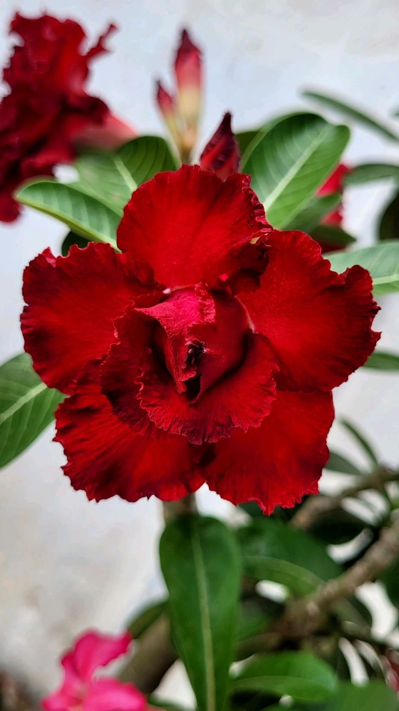
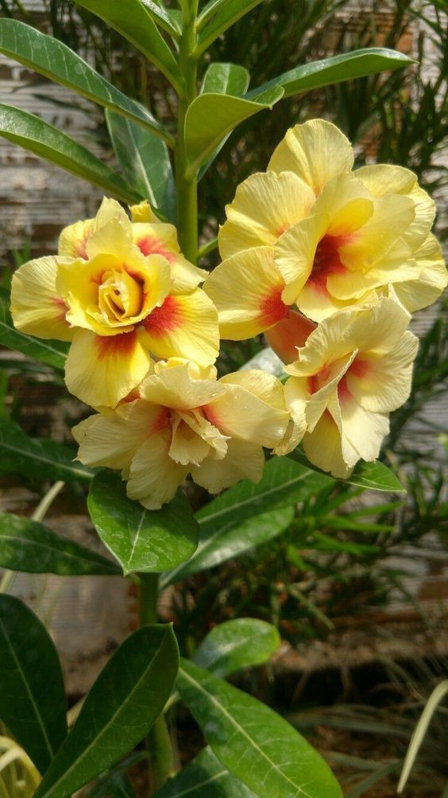
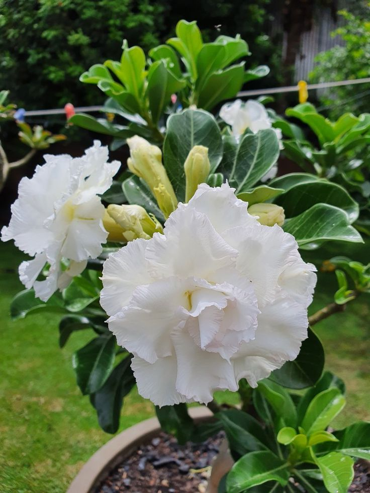

A elegância natural das Rosas do Deserto
Flores exclusivas para mulheres que cultivam beleza e bem-estar.
Conhecer ColeçãoNossa História
A Antônia Plantas nasceu da paixão pelo cultivo e pelo desejo de compartilhar a beleza única das Rosas do Deserto. Cada planta é cuidada com dedicação para garantir cores vibrantes e saúde, transformando qualquer ambiente em um refúgio de paz.
Nossas Especialidades

Rosas Vermelhas
O clássico vibrante que traz energia e vida ao seu jardim.

Rosas Amarelas
Raridade e sofisticação em tons solares exclusivos.

Rosas Brancas
Pureza e elegância minimalista para ambientes sofisticados.